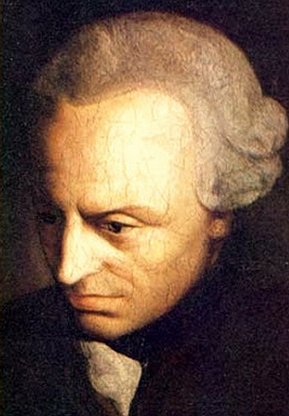
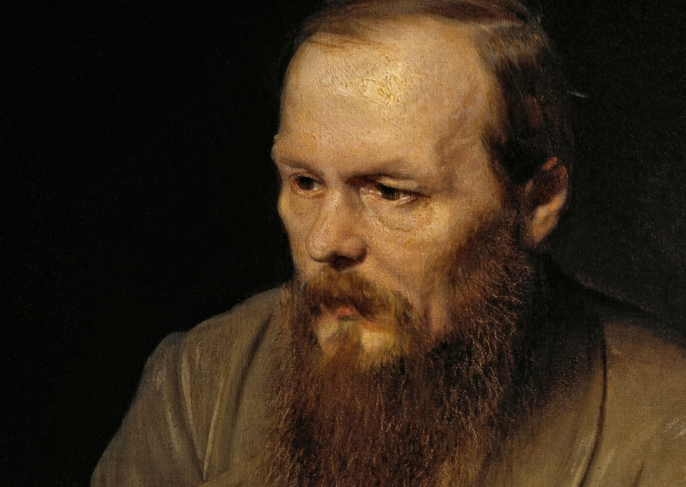

Pochodził z rodziny rzymskich arystokratów o hiszpańskich korzeniach. Jego rodzicie
zmarli, kiedy był młody
Od najmłodszych lat otrzymywał świetną edukację i zajmował wysokie urzędy państwowe
W wieku 17 lat został adpotowany przez następce cesarza Antonina Piusa
Mając 20 at zafascynował się filozofią
W 161 roku został cesarzem
Napisał "Rozmyślania", swego rodzaju zbior osobistych refleksji, nieprzeznaczonych do
publikacji
Prowadził wiele wojen z plemionami barbarzyńskimi nad Dunajem odnosząc zwycięstwa
W trakcie jednej z wypraw podupadł na zdrowiu, zmarł na skutek dżumy, skończył erę tzw.
pięciu dobrych cesarzy
Był jednym z najświetniejszych przedstawicieli szkoły stoickiej
Cechowały go obowiązkowość, skromności, powagę, umiłowanie cnót starorzymskich i
życzliwość dla rodzaju ludzkiego
Poglądy
Należy w pełni panować nad panowania nad stanami uczuciowo emocjonalnymi
Zamiast dążyć ku rozkoszom, walczyć o sławę i bogactwa, powinniśmy odnajdywać spokój,
jaki daje nam pracowitość, życzliwość wobec innych ludzi, czy sumienne wypełniania
obowiązków, jakie wynikają dla nas z naszej życiowej roli.
Ważne dzieła:
Rozmyślania
stoicyzm

Immanuel Kant
Data urodzenia
22 kwietnia 1724
Data śmierci
12 lutego 1804
Miejsce urodzenia
Królewiec
Życiorys
Urodził się i spędził całe życie w Królewcu
Jest uważany za jednego z najwybitniejszych przedstawicieli oświecenia i najważniejszych
filozofów w historii ludzkości
Interesował się granicami ludzkiego myślenia, poznania i zrozumienia
Uczył logiki i metafizyki na Uniwerytecie Albrechta w Królewcu
Jego najpopularniejsze dzieło "Krytyka czystego rozumu" została umieszczona w indeksie
ksiąg zakazanych w 1827 roku
Poglądy
Nasz umysł zakrzywia postrzeganie rzeczywistości, jedyne co możemy zrobić to badać w
jaki sposób to robi
Nigdy nie poznamy świata noumenalnego
Nie wiemy czy rzeczywistość jest jedna czy jest ich wiele
Siłą umysłu możemy pojąć jedynie nasz własny umysł
Czyn jest moralny tylko wtedy, gdy wynika z rozumu, a nie z potrzeb lub uczuć
Moralność to system imperatywów kategorycznych
Należy szanować wolność i godność każdej jednostki
Człowiek powinien kierować się słusznością maksymów w swoich czynach
Trzeba posługiwać się rozumem i odrzucać emocje i uczucia
Ważne dzieła:
Krytyka czystego rozumu
idealizm
imperatyw kategoryczny
aprioryzm
noumen
deontologia

Fiodor Dostojewski
Data urodzenia
30 października 1821
Data śmierci
28 stycznia 1881
Miejsce urodzenia
Moskwa
Życiorys
Urodził się w rodzinie zubożałej szlachty
Uczył się w Wojskowej Szkole Unżynieryjnej, której nie znosił. Wolał czytać literaturę i
pisać sztuki teatralne
Po ukończeniu studiów został oficerem, w międzyczasie zaczął pisać własne dzieła
Należał do tzw. Koła Pietraszewskiego, które krytykowało carską władzę i dążyło do
reform w Rosji
Został aresztowany i skazany na śmierć przez tajną policję. Tuż przed wykonaniem wyroku
przybył posłaniec informujący o nadzwyczajnym złagodzeniu kary. Kara śmierci została
zamieniona na 4 lata katorgi
Po wykonaniu kary, dzięki łasce cara, przywrócono mu rodową godność szlachecką i
awansowano do stopnia oficera
Został pisarzem, aż do śmierci pisał książki. Na krótko przed śmiercią ukazali się
"Bracia Karamazowa" uznawani za jego najwybitniejsze dzieło
Poglądy
Idealizował prawosławie i carską Rosję. Uważał, że tylko prawosławna Rosja może obronić
się przed szkodliwymi idealogiami nadciągającymi z zachodu.
Uważał Rosję za naród wybrany
Chwalił prostoduszność i krytykował ludzką pychę
Cierpienie i ból są nierozłączną częścią ludzkiej świadomości
Wiara w Boga jest niezbędna do poprawnego funkcjonowania człowieka i społeczeństwa
Ważne dzieła:
Bracia Karamazow
Biesy
Młokos/Młodzik
Notatki z Podziemia
Zbrodnia i Kara
egzystencjalizm
Friedrich Wilhelm Nietzsche
Data urodzenia
15 października 1844
Data śmierci
25 sierpnia 1900
Miejsce urodzenia
Röcken
Życiorys
Urodził się jako syn luteriańskiego pastora
W trakcie nauki na uniwersytecie stracił wiarę i poznał filozofię Schopenhauera
Po odbyciu, obowiązkowej w Prusach, służby wojskowej, jego kariera akademicka bardzo
szybko zaczęła się rozwijać. Przed 25. rokiem życia zaoferowano mu profesurę
nadzwyczajną na katedrze filologii klasycznej uniwersytetu w Bazylei
Nietzsche mocno zaprzyjaźnił się z Richardem Wagnerem, obaj byli mocno zainteresowani
muzyką i filozofią Schopenhauera
W 1856 roku pojawiły się u niego pierwsze objawy nieznanej choroby, która towarzyszyła
mu do końca życia
W 1889 w Turynie doznał katastrofy psychicznej po której żył w odosobnieniu, opiekowała
się nim siostra
Poglądy
Zaprzeczał wolnej woli, był fatalistą
Przestał odczuwać obecność Boga w świecie, w odróżnieniu do średniowiecza czy
starożytności
Jeśli w życiu codzinnym nie ma Boga to moralność traci sens. Usuwając Boga usuwa się
pojęcia dobra i zła
Z updakiem moralności pojawia się możliwość kształtowania nowej, własnej moralności
Nasze wzorce dobra i zła mają nieoczekiwane korzenie. Według Nietzschego moralność jaką
znamy stworzyli ludzie słabi i biedni, ponieważ działało to na ich korzyść. Stworzyli
moralność odwrotną do moralności ówczesnych elit
Stworzył pojęcie resentymentu, które uznawał za podstawę chrześcijaństwa
Podkreślał większą wagę emocji i irracjonalności od umysłu
Potępiał chrześcijańskie wartości, uważał je za złe i hamujące postęp ludzki